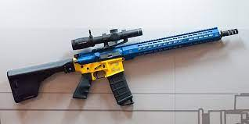
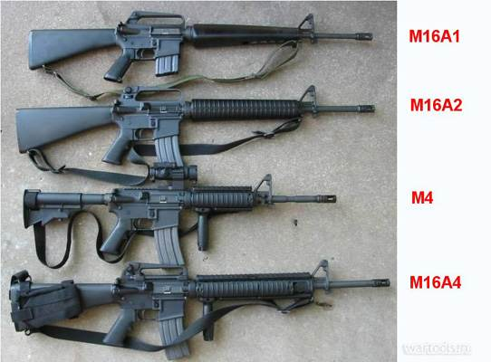

M-16 (автоматична) гвинтівка.
M-16
М16, офіційно значиться як Rifle, Caliber 5.56 mm — узагальнювальна назва сімейства автоматичних гвинтівок, які походять від ArmaLite AR-15 та розроблені компанією Colt в середині XX століття. До сімейства гвинтівок M16 відносять головним чином модифікації M16/A1/A2/A3/A4 — різновиди основної піхотної гвинтівки армії Сполучених Штатів Америки з 1960х років, які використовуються[коли?] у 15 країнах НАТО та є найбільш розповсюдженими у світі гвинтівками калібру 5.56 мм. Більшу частину M16 виготовляють Colt та FN Herstal, але багато різних країн світу випускають свої модифіковані версії M16. Перша версія M16 була представлена на початку 1960-х років, однак масове використання M16A1 армією США почалось у 1965 році і до 1967 року практично вся армія була переозброєна цією гвинтівкою. Переведення армії та флоту на наступну модель, M16A2, почалось наприкінці 1980-х, а M16A4 була впроваджена ще пізніше. Всі вищеназвані модифікації являють собою автоматичні гвинтівки калібру 5.56 мм, який є стандартом НАТО з кінця 1970-х років. M16 — легка автоматична гвинтівка калібру 5.56 мм з повітряним охолодженням, автоматичний рухомий затвор працює за рахунок порохових газів, набої подаються за допомогою магазину. Виготовляється гвинтівка зі сталі, алюмінію та композитного пластику.
History
Розробка
В 1948 році Служба оперативних досліджень Армії США (U.S. Army Operations Research Office — ORO) починає дослідження ефективності стрілецької зброї. Ці дослідження завершуються на початку 1950-х років висновком про бажаність переходу від зброї калібру .30 (7,62 мм) до зброї калібру .22 (5.56 мм), яка має можливість ведення автоматичного вогню, високу швидкість кулі і ефективну дальність не менше 300 метрів. В 1953–1957 рр. Міністерство оборони (МО) США проводить наступний дослідницький проект під кодовою назвою «Project SALVO», який призводить до приблизно аналогічних результатів. На основі отриманих висновків МО США починає програму SPIW (Special Purpose Infantry Weapon), в рамках якої має бути розроблено перспективний стрілецьку зброю, яка має стріляти малокаліберними кулями і 30-40 мм гранатами. В 1957 році представники Армії США звертаються до компанії Armalite Division of the Fairchild Aircraft Corp з пропозицією розробити автоматичну гвинтівку .22 (5.56 мм) калібру, з малою масою, здатну на дальності в 500 метрів пробити стандартну армійську каску. Юджін Стоунер (Eugene Stoner), конструктор фірми Armalite, починає розробку нової гвинтівки на базі своєї більш ранньої розробки, гвинтівки, AR-10 калібру 7,62 мм. Одночасно з цим інженери фірм Sierra Bullets і Remington, в співдружності з Armalite, починають розробку нового бойового набою калібру 5,56 мм на базі мисливських набоїв .222 Remington і .222 Remington Magnum. Новий набій спочатку отримує назву .222 Remington Special, а остаточне його позначення — .223 Remington (5,56x45 мм).
Випробування і перше використання
У 1958 році перші гвинтівки фірми Armalite, позначені AR-15, передаються для випробувань Армії США. В ході випробувань виявляється ряд проблем з надійністю і точністю стрільби. У кінці 1959 року батьківська компанія фірми Armalite, Fairchild Co, незадоволена ходом розробки гвинтівки AR-15, продає всі права на її конструкцію компанії Colt's Manufacturing Company. У 1960 р. Стоунер залишає фірму Armalite і переходить працювати в Colt. В цьому ж році Colt демонструє гвинтівки AR-15 заступнику начальника штабу ВПС США генерала Кертісу ЛеМей. Під враженням від демонстраційних стрільб ЛеМей висловлює бажання закупити 8 000 гвинтівок AR-15 для служби безпеки Стратегічного Повітряного Командування ВПС США (US AF Strategic Air Command security forces) для заміни застарілих карабінів M1 і M2. У 1962 році Агентство з перспективних досліджень МО США (Advanced Research Projects Agency — ARPA) закуповує 1000 гвинтівок AR-15 у фірми Colt і направляє їх до Південного В'єтнаму для перевірки в умовах реальних бойових дій. Війська Південного В'єтнаму спочатку використовують нову зброю досить успішно. У 1963 році фірма Colt отримує контракт на виробництво 85 000 гвинтівок для Армії США (під позначенням XM16E1) і ще на 19 000 гвинтівок — для ВПС США (M16). Гвинтівка M16 була нічим іншим як вихідною AR-15 з відповідним маркуванням (Property of US Govt — Власність Уряду США тощо). Гвинтівка XM16E1 відрізнялася від AR-15/M16 наявністю досилача затвора («forward assist»), що мав вигляд великої кнопки на правій стороні ствольної коробки. Ця покупка вважалася «одноразовою» і призначалася для різних елітних підрозділів, на кшталт «Зелених беретів» і Рейнджерів, як тимчасовий захід перед прийняттям на озброєння систем SPIW.
Прийняття на озброєння
В 1964 році ВВС США офіційно приймають на озброєння гвинтівку M16. В цьому ж році Армія США приймає гвинтівку XM16E1 як зброю обмеженого стандарту, для заповнення тимчасової (як тоді вважалося) ніші між знятою з виробництва 7,62 мм гвинтівкою M14 і новою зброєю, яка створювалась за програмою SPIW (ця програма закінчилася провалом). У 1966 році фірма Colt отримує урядовий контракт на поставку 840 000 гвинтівок, на загальну суму в майже 92 мільйони доларів США. 28 лютого 1967 року Армія США офіційно приймає на озброєння гвинтівку XM16E1 під позначенням «US Rifle, 5.56mm, M16A1». M16A1 У 1965—1967 рр. досвід експлуатації гвинтівок М16А1 американськими військами у В'єтнамі починає приносити перші сумні плоди. Велике число відмов гвинтівок в бойових умовах призводить до значних людських втрат серед американських солдатів. Тому було кілька взаємопов'язаних причин. По-перше, при створенні набоїв для М16 використовувався порох типу IMR фірми Dupont, але Армія США, з міркувань економії, при виробництві набоїв замінила його на стандартний порох, який використовували при спорядженні набоїв 7,62×51 mm NATO. Цей порох, на відміну від IMR, давав значно більший відсоток нагару, який осідав в газовідвідній системі, затворній групі і ствольній коробці гвинтівки M16. У поєднанні з відмовою від хромування затворної групи і каналу ствола і вологим кліматом Південно-Східної Азії це призводило до швидкого засмічення механізмів гвинтівки з подальшими відмовами. Часті були застрягання гільзи в набійнику. Все б було і нічого, якби гвинтівки піддавалися регулярному чищенню. Але в результаті хитрого маркетингового ходу фірми Кольт, що заявляла що гвинтівка М16 практично не вимагає чистки і обслуговування, при їх початкових закупівлі Армія США не замовила комплектів для чистки зброї — знову таки для економії. Крім того, солдати не отримували потрібного навчання по догляду за гвинтівкою. В 1967—1970 рр. за результатами розслідування, проведеного комісією при Конгресі США, приймається ряд термінових заходів по виправленню ситуації. По-перше, тип пороху у набоях змінюється на більш «чистий», що дає набагато менше нагару. По-друге, група затвора, набійник і канал ствола починають хромувати, що підвищує корозійну стійкість деталей і полегшує їх чистку. По-третє, терміново закуповуються комплекти для чищення зброї, а в діючих військах починається широка програма навчання солдат чищенню і догляду за гвинтівкою, в рамках якої видаються широко відомі настанови по догляду за зброєю у вигляді коміксів. Приблизно до 1970 року штатні 20-набійні алюмінієві магазини у військах починають заміняти на 30-набійні, для того щоб вирівняти М16 за цим показником з радянськими і китайськими автоматами Калашникова.
Модифікації
У 1977–1979 рр. за результатами комплексних випробувань єдиним набоєм для армій країн НАТО стає покращений варіант набою 5,56×45 мм, розроблений бельгійцями з FN Herstal під позначенням SS109. Цей набій спочатку був створений разом з ручним кулеметом FN Minimi, і мав дещо важчу кулю з комбінованою серцевиною зі сталі і свинцю. Початкова швидкість кулі дещо зменшилась в порівнянні зі старішим американським набоєм М193, однак ефективність на великих відстанях зросла за завдяки вищому балістичному коефіцієнту кулі. Куля SS109 вимагала для своєї стабілізації в польоті крутішого кроку нарізів — замість кроку 1:12 (1 оборот на 12 дюймів — 305 мм), крок нарізів для SS109 довелося скоротити до 1:7 (1 оборот на 7 дюймів — 178 мм). При цьому з нових стволів можна було спокійно стріляти старими (легкими) кулями, при деякому погіршенні точності стрільби. Стрільба новими (важкими) кулями зі старих стволів призводила до істотного падіння точності і купчастості стрільби. У 1981 році фірма Colt розробила варіант гвинтівки M16A1, адаптований під набій SS109/5.56mm NATO, і передає його на випробування Армії США під позначенням M16A1E1. Ця гвинтівка відрізнялась від M16A1 товстішим і важчим стволом з кроком нарізів 1:7, поліпшеними прицільними пристосуваннями, новою цівкою і прикладом, а також заміною режиму безперервного вогню (чергами) на режим з відсічками з трьох пострілів. У 1982 році гвинтівка M16A1E1 отримує офіційне позначення «US Rifle, 5.56mm, M16A2». У 1983 році Корпус морської піхоти (КМП) США приймає на озброєння M16A2. У 1985 році Армія США приймає на озброєння M16A2 замість М16А1. У 1988 році компанія FN Manufacturing Co, американський підрозділ бельгійського концерну FN Herstal, стає основним постачальником гвинтівок M16A2 для Збройних Сил США. Компанія Colt продовжує виробництво гвинтівок типу AR-15/M16 тільки для цивільного і поліцейського ринків, а також на експорт. У 1994 році на озброєння ЗС США надходять нові варіанти гвинтівки М16: це гвинтівки M16A3 і M16A4, які мають так звані «пласкі» («flat top») ствольні коробки, у яких інтегральна рукоятка для перенесення замінена на напрямну типу Picatinny, призначену для установки різноманітних прицільних пристосувань. В іншому гвинтівка M16A4 ідентична M16A2, тоді як M16A3 відрізняється ще й тим, що замість відсічення по 3 постріли вона має режим вогню чергами будь-якої довжини (як на М16А1).
Переваги та недоліки
В цілому слід визнати, що вже до початку 1970-х років гвинтівка М16 була повноцінною бойовою зброєю, яка мала цілий ряд істотних переваг (ну і недоліки, зрозуміло, у неї теж були). У порівнянні з головним противником М16 на світовій арені — автоматом Калашникова (АКМ), М16 мала велику точність і купчастість стрільби одиночними пострілами, була більш комфортна і зручна у використанні. З іншого боку, М16 вимагала набагато більш ретельного догляду, більш якісних боєприпасів. За надійністю в особливо важких умовах (забруднення, запилення) АКМ також перевершував М16. Одним з головних переваг конструкції Стоунера треба визнати її виняткову гнучкість. Завдяки модульності конструкції M16 фактично складається з двох великих модулів — «верхнього» (верхня частина ствольної коробки, ствол, газовідвід, цівка, прицільні пристосування, група затвора) і «нижнього» (нижня частина ствольної коробки, ударно-спусковий механізм, буфер з поворотною пружиною, пістолетна рукоятка, приклад), забезпечена можливість дуже швидкої реконфігурації гвинтівки. Так, на одну відповідну стандартам «нижню» частину можна встановити верхні частини зі стволами різної довжини (від 250 до 610 мм), калібру (.22LR, 7,62×39 мм, 9×19 мм, 10мм Auto, .50AE і багатьох інших, не рахуючи рідного 5,56х45 мм), з інтегральною або знімною рукояткою для перенесення. Особливо це важливо для споживачів на цивільному і поліцейському ринках. Крім того, в останні роки з'явилися нові комплектні модулі верхньої частини ствольної коробки (upper receiver) або переробні набори (conversion kit), що дозволяють замінити оригінальну газовідвідну систему Стоунера на варіант з газовим поршнем з коротким ходом, що дозволяє суттєво зменшити засмічення групи затвора і «начинки» ствольної коробки продуктами згоряння. З іншого боку, подібні переробки можуть підвищити знос ствольної коробки і вузла замикання (бойових упорів затвора) в силу несиметричності прикладання сили при відмиканні (поршень діє на виступ на верхній частині рами затвора) і відсутності «підтискання» затвора вперед, до ствола при початку відмикання (за рахунок тиску в порожнині рами затвора).
Конструкція
Гвинтівки серії M16/AR-15 являють собою автоматичну або напівавтоматичну зброю з повітряним охолодженням ствола, живленням з відокремлених коробчастих магазинів і автоматикою на основі газового двигуна. Вогонь ведеться із закритого затвора.
Автоматика
Газовідвідна автоматика конструкції Юджіна Стоунера не має газового поршня в його традиційному розумінні. Порохові гази відводяться через отвір в стінці ствола і по газовій трубці з нержавіючої сталі відводяться всередину ствольної коробки. Задній кінець газової трубки перед пострілом входить в спеціальну насадку («gas key»), встановлену зверху на рамі затвора. У момент пострілу порохові гази проходять по газовій трубці і через насадку потрапляють в порожнину усередині рами затвора. Ця кільцева порожнина розташована навколо хвостовика затвора і з переднього боку обмежена потовщеною частиною затвора, а з заднього — стінкою рами затвора. Тиск газів всередині цієї порожнини змушує затворну раму почати рух назад, щодо спочатку нерухомого затвора. Цей рух за допомогою фігурного паза в рамі затвора і ведучого штифта, який входить в нього, на затворі повертає затвор, виводячи його бойові упори (всього 7) із зачеплення з хвостовиком ствола. Після розчеплення затвора зі стволом вся група затвора (затвор і затворна рама) продовжують рух назад під дією залишкового тиску газів в набійнику і завдяки інерції цих частин. При цьому русі зі ствола витягається і викидається назовні стріляна гільза і стискається поворотна пружина, розташована в прикладі. Під дією поворотної пружини група затвора повертається вперед, подаючи в ствол новий набій і в кінці руху замикаючи ствол поворотом затвора. Після вичерпання всіх набоїв в магазині група затвора автоматично залишається в задньому положенні завдяки наявності в механізмі затримки затвора, що вмикається автоматично подавачем магазину, а вимикається вручну, за допомогою кнопки на лівому боці ствольної коробки.
Затворна система
Рукоятка зведення Т-подібна, розташована в задній частині ствольної коробки над прикладом, і не рухається при стрільбі. Починаючи з ХМ16Е1/М16А1 гвинтівки мають на правій стороні ствольної коробки досилач затвора, призначений для ручного закриття затвора, якщо зусилля поворотної пружини для цього не вистачає (наприклад, засмітився набійник). Досилач має вигляд кнопки з «собачкою» на протилежному кінці, яка взаємодіє з насічками на правій стороні рами затвора. Вікно для викиду гільз закривається підпружиненою пилозахисною шторкою, що автоматично відкривається при зведенні затвора. Крім того, починаючи з М16А2 за вікном для викиду гільз з'явився виступ-відбивач, призначений для забезпечення можливості комфортної стрільби з лівого плеча. Цікаво, що для М16А1, яка не мала такого пристосування, в Армії США існував спеціальний знімний відбивач, що встановлювався при необхідності на зброю.
УСМ
Ударно-спусковий механізм курковий, досить простий по конструкції. Режими роботи УСМ вибираються за допомогою трипозиційного (на бойовій зброї) або двохпозиційного (на цивільній) перемикача, розташованого на ствольній коробці зліва, над пістолетною рукояткою. Положення перемикача для бойової зброї: «safe» (запобіжник), «semi» (одиночні постріли), «auto» (автоматичний вогонь, М16А1, М16А3) або «burst» (вогонь з відсіченням по 3 постріли, М16А2, М16А4).
Ствольна коробка
Ствольна коробка виконана з двох половин, верхньої і нижньої (upper receiver і lower receiver). Обидві половини виконані за допомогою верстатної обробки з алюмінієвих кованих заготовок (деякі комерційні моделі мають ствольні коробки цілком фрезеровані з алюмінію). З'єднання двох половин відбувається за допомогою двох поперечних штифтів — переднього (поворотного — pivot pin) і заднього (розбірного — takedown pin). Для неповного розбирання задній штифт видавлюється зліва направо за допомогою будь-якого відповідного предмета, в тому числі — набою, а потім ствольна коробка «переламується» навколо переднього штифта, після чого з неї можна витягти затворну групу і рукоятку для заряджання, і зробити огляд і чистку зброї. Для подальшого розбирання передній штифт видавлюється аналогічним чином і ствольна коробка розбирається на дві частини. Потрібно підкреслити, що обидва штифта не витягаються повністю, а залишаються стирчати в нижній частині ствольної коробки, тобто втратити їх при розбиранні навіть в польових умовах якщо і не неможливо, то дуже складно.
Фурнітура
Фурнітура гвинтівки (цівка, пістолетна рукоятка, приклад) виконані з ударостійкого пластику чорного кольору. Цівка на М16А1 і більш ранніх гвинтівках — трикутного поперечного перерізу, з двох невзаємозамінних половин, лівої і правої. На М16А2 цівка круглого перетину, з двох взаємозамінних половин, верхньої і нижньої. Усередині цівка має алюмінієві теплозахисні вкладиші. Приклад у М61А2 трохи довший, ніж у М16А1. У потиличнику прикладу є дверцята, що закривають відсік для приладдя для чищення і догляду за зброєю. Гвинтівка комплектується знімним гвинтівковим ременем. Полум'ягасник на самих ранніх моделях М16 — з трьома щілинами, які відкриті вперед, на М16А1 — з чотирма щілинами, які закриті спереду, на М16А2 — з п'ятьма щілинами. На полум'ягасник міг бути встановлюватися багнет-ніж моделі M7 або M9. На гвинтівках М16А1 і М16А2 можлива установка 40-мм однозарядного гранатомета M203. Гранатомет встановлюється під стволом гвинтівки замість штатної цівки, для стрільби з нього на гвинтівку також ставляться спеціальні додаткові прицільні пристосування. На гвинтівках М16А2/А3/А4 з системою RIS (нова цівка з інтегральними напрямними типу Picatinny rail) гранатомет кріпиться безпосередньо на нижню напрямну Picatinny.
Прицільні пристосування
Прицільні пристосування на М16А1 включають в себе круглу мушку на основі газової камери, закриту з боків двома «вухами». Діоптричний цілик перекидний, L-подібний, розрахований на відстані в 250 і 400 метрів, і розташований в рукоятці для перенесення. Мушка має можливість регулювання по висоті, а цілик має механізм введення бічних поправок (тільки для приведення зброї до нормального бою). На М16А2 мушка в цілому аналогічна мушці М16А1, однак має прямокутний перетин. Цілик також діоптричний, перекидний, проте поправки на дальність вводяться за допомогою барабанчика під ціликом, а дві апертури розраховані на різні умови стрільби — при хорошій освітленості (менша) і при малій освітленості (більша). На М16А2 і М16А3 замість інтегральної рукоятки виконана напрямна для кріплення різних прицільних пристосувань типу Picatinny. При необхідності на цю напрямну може бути встановлена знімна ручка для перенесення з прицільними пристосуваннями, ідентичними гвинтівці М16А2. В останні роки армійські гвинтівки часто комплектуються оптичними прицілами малої кратності Trijicon ACOG або коліматорними прицілами Aimpoint або EOTech, що встановлюються на швидкоз'ємних кронштейнах на напрямну Picatinny rail на верхній частині ствольної коробки. Додатково до оптичних прицілів можуть встановлюватися резервні відкриті прицільні пристосування, найчастіше мають вигляд складної діоптричної цівки, також встановленої на напрямну Picatinny rail. Потрібно зауважити, що при використанні 4Х прицілів Trijicon ACOG (вони, зокрема, є штатними для Морської піхоти США) гвинтівка М16А4 забезпечує ефективну стрільбу на дальність до 400—500 метрів.
Живлення
Живлення набоями здійснюється з коробчастих дворядних магазинів. Спочатку магазини були алюмінієві, на 20 набоїв, пізніше з'явилися алюмінієві і сталеві магазини на 30 набоїв. Крім того, існує значний вибір магазинів різної ємності, вироблених для комерційного продажу — від 7 і 10-набійних для цивільної зброї, до 40-набійних коробчастих і 100—120-набійних барабанних (включаючи 100-набійні подвійні барабани Beta-C американського виробництва і 120-набійні барабани китайського виробництва).
Цивільні і поліцейські варіанти
Крім ВС США, гвинтівки М16 армійського зразка використовуються в поліції США (наприклад, поліція Лос-Анджелеса (LAPD) використовує списані з Армії гвинтівки), ці ж гвинтівки широко поставляються на експорт. Їх використовують багато елітних підрозділів інших країн, такі як британські SAS або австралійські рейнджери. Значна кількість М16 є на озброєнні в Ізраїлі. У свій час гвинтівки М16 вироблялася за ліцензією на Філіппінах і в Південній Кореї. В даний час канадійська компанія Diemaco виробляє ліцензійні варіанти М16 під позначеннями С7 і С8 для Канадських Збройних сил і на експорт. Цивільні і поліцейські модифікації гвинтівки AR-15 виробляються під самими різними позначеннями десятками фірм на території США, зокрема такими як Armalite, Bushmaster, Colt, Hesse, Les Baer, Olympic Arms, Wilson Combat, і багатьма іншими. Крім того, клони AR-15 виробляються в Китаї на державних підприємствах NORINCO під позначеннями «Model 311» (тільки самозарядна версія) і «CQ» (з можливістю автоматичного вогню).